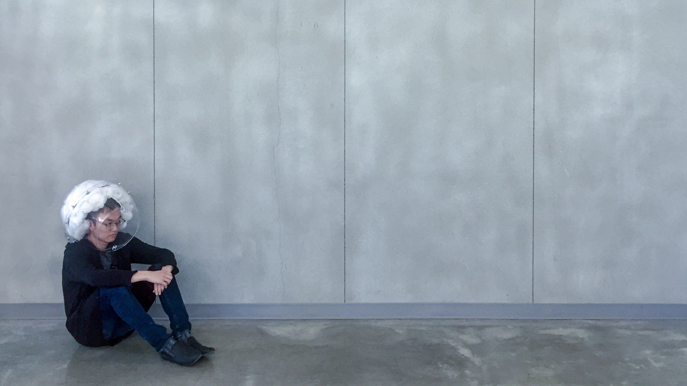

What if we could visualize depression? Or experience it?

Nicci Cazares, Michelle Chang, Ricky Lee, Josephine Wu, Tina Xu
View on GitHub | Demo piece at 2017 Silicon Valley Maker Faire
Contributions: Sketching and design; user research; electrical and software prototyping; photography and videography
Despite being one of the most common mental disorders in the United States, depression remains a subject that many struggle to give a voice to due to the societal stigma and ignorance that surrounds it. Designed as a performance piece to help start conversations about depression, Storment gives public form to a very private and internal struggle. This project seeks to visualize the unseen, bring awareness to mental illness, grow understanding in individuals who have not experienced the weight and toll of mental illness, and ultimately explore the question of: What happens when mental illness ceases to be invisible?
Storment is a helmet that seeks to bring the largely invisible stresses of mental illness into the physical space and start conversations about depression and related topics at large. To create a straightforward and easily-recognizable performance piece, we abstracted away parts of mental illness and designed with the assumptions that negative feelings associated with depression are related to stress and isolation, that opening up and talking with others will provide some form of relief.
Storment fabricates a “personal storm” around the wearer, using a combination of weight and a barrage of stimuli: lightning flashes and booming thunder, fog, and the sound of rain, to create a suffocating, uncomfortable, and isolating space for the wearer. The longer an individual wears Storment, the more severe and overwhelming the environment becomes. The fog gradually builds up to create a thick, hazy vapor cloud. Similarly, the storm simulation intensifies the longer the wearer stays isolated, symbolizing that the longer someone with depression stays secluded from others, trapped with their own thoughts, the worse their condition becomes. Only when the wearer resolves to “open up,” represented by their opening the door of the helmet, will the storm finally calm.
>Read the full report, detailing the design process, preliminary sketches, and fabrication journey on GitHub.
Read the instructables document, explaining how to fabricate, code, and wire the helmet (also on GitHub).